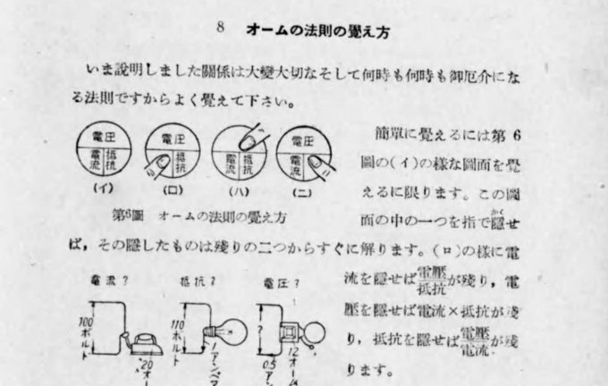
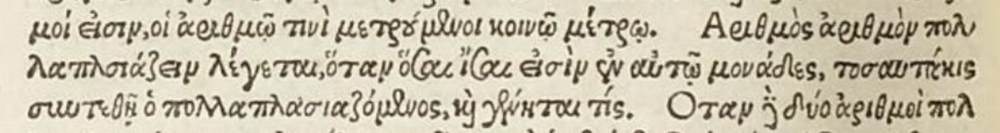
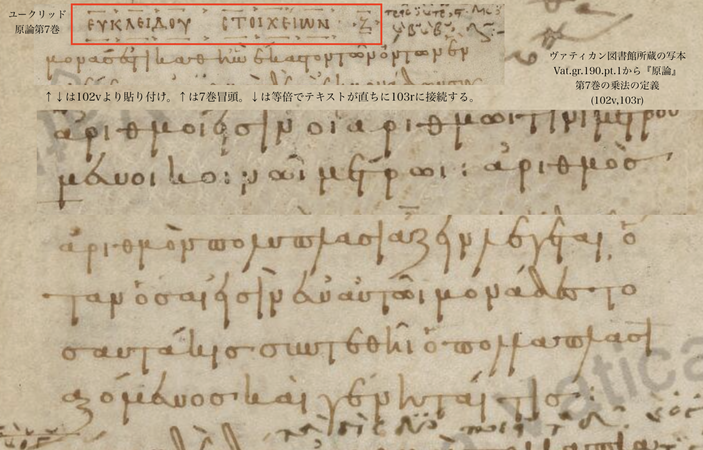

日本ではオームの法則を表すOT図が戦時中から存在する。武田 (1943: 9)は、 青少年を対象とした参考書の中で、電圧、電流、抵抗をOT図に書き入れた例である。

山口大学教育学部で永年、理科教育を講じた面堂春雄(1930年生2014年歿)は、 面堂 (1988: 72)で【この手法は古くから流布しているようで、筆者も旧制中学校在学中に耳目にした。】と述べている。この述懐は、面堂が 【中学校教師用書の例 (禿ほか1984)】に【オーム則の「暗記法」】(同)を見出した際のものである。面堂 (1988: 85)の【参考文献】はこの指導書を【禿 宗男ほか1984。改訂中学校理科・1分野下・教師用指導書。大日本図書刊。】 と記している。
2024年時点で現用の大日本図書の中学理科教科書に付属する教師用指導書も、オームの法則を表すOT図を掲載している。大日本図書編 (2021: 182)のレプリカを提示しよう。このページは「単元3 電流とその利用」に含まれ、 レプリカは指導書の下段注になっている。
◉中学校1年で学んだ密度の計算同様、生徒はわり算を敬遠しがちだが、繰り返し練習問題をさせて、数値の扱いに慣れさせる。
◉オームの法則の式は、小学校5年で学習した道のり・時間・速さの関係式に似ており、2つの数値から残りの1つの数値を計算で求められる。
1533年、ギリシャ語の『原論』が初めて印刷され出版された。Grynaeusが校訂した。乗法の定義は88ページ。 序文でGrynaeusはロンドンとダラムの司教カスバート・タンスタルに謝辞を述べている。 この人はトマス・モアの友人であり、共に外交使節として大陸に渡りエラスムスらと交流があった。 タンスタルの算術書はイングランドで最初に出版された算術書であった。

1804年、Peyrardがヴァティカン図書館で原論のギリシャ語古写本を発見した(MS Vat.gr.190.pt.1)。テオンによる追加を含まない写本の発見はそれまで知られておらず、この発見を機にユークリッド本来の原論のテキストへの関心が高まった。 乗法の定義はMS D'Orville 301と同一である(102v, 103r)。現在の校訂本との違いは、 校訂本テキスト第3語πολλαπλασιάζεινがπολυπλασιάζεινになっていることだけである。 この写本は9世紀のものとされる。

現代、ユークリッドのギリシャ語原文の定本とされるのは、HeibergとMengeによる校訂本。乗法の定義はGrynaeusの校訂本と同じであった。Heiberg & Menge (1884: 186,7)から、 ギリシャ語とラテン語訳を1つの画像に加工して引用する。